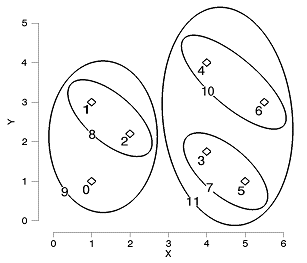

The CLUSTER_TREE function computes the hierarchical clustering for a set of m items in an n -dimensional space. The CLUSTER_TREE function is designed to be used with the DENDROGRAM or DENDRO_PLOT procedures.
This routine is written in the IDL language. Its source code can be found in the file cluster_tree.pro in the lib subdirectory of the IDL distribution.
Result = CLUSTER_TREE( Pairdistance , Linkdistance [, LINKAGE = value ] )
or for LINKAGE = 3 (centroid):
Result = CLUSTER_TREE( Pairdistance , Linkdistance , LINKAGE = 3, [, DATA = array ] [, MEASURE = value ] [, POWER_MEASURE = value ] )
The Result is a 2-by-( m -1) integer array containing the cluster indices. Each row of Result contains the indices of the two items that were clustered together. The distance between the two items is contained in the corresponding element of the Linkdistance output argument.
Note: The original m items are given indices 0... m -1, while each newly-created cluster is given a new index starting at m and incrementing.
An input array containing the pairwise distances as either a compact vector or as a symmetric matrix, usually created by the DISTANCE_MEASURE function. For the compact vector form, Pairdistance should be an m* ( m -1)/2 element vector, ordered as: [ D 0, 1 , D 0, 2 , ..., D 0, m-1 , D 1, 2 , ..., D m -2, m-1 ], where D i , j denotes the distance between items i and j . For the matrix form, Pairdistance should be an m -by- m symmetric matrix with zeroes down the diagonal.
Set this argument to a named variable in which the cluster distances will be returned as an ( m -1)-element single or double-precision vector. Each element of Linkdistance corresponds to the distance between the two items of the corresponding row in Result . If Pairdistance is double-precision then Linkdistance will be double-precision, otherwise Linkdistance will be single-precision.
If the LINKAGE keyword is set equal to 3 (centroid), then the DATA keyword must be set to the array of original data as input to the DISTANCE_MEASURE function. The data array is necessary for computing the centroid of newly-created clusters.
Note: DATA does not need to be supplied if LINKAGE is not equal to 3.
Set this keyword to an integer giving the method used for linking clusters together. Possible values are:
|
Value |
Method Used |
|
0 |
(Default) Use single linkage (nearest neighbor). The distance between two clusters is defined as the smallest distance between items in the two clusters. This method tends to string items together and is useful for non-homogeneous clusters. |
|
1 |
Use complete linkage (furthest neighbor). The distance between two clusters is defined as the largest distance between items. This method is useful for homogeneous, compact, clusters but is not useful for long chain-like clusters. |
|
2 |
Use weighted pairwise average. The distance between two clusters is defined as the average distance for all pairs of objects between each cluster, weighted by the number of objects in each cluster. This method works well for both homogeneous clusters and for chain-like clusters. |
|
3 |
Use weighted centroid. The distance between two clusters is defined as the distance between the centroids of each cluster. The centroid of a cluster is the average position of all the subclusters, weighted by the number of objects in each subcluster. |
Note: If the LINKAGE keyword is equal to 3, the distance between two clusters may be less than the distance between items within one of the clusters. In a dendrogram plot this will cause the node lines to overlap.
If the LINKAGE keyword is equal to 3 (centroid), set this keyword to an integer giving the distance measure (the metric) to use. Possible values are:
|
Value |
Type |
|
0 |
(Default) Euclidean distance |
|
1 |
CityBlock (Manhattan) distance |
|
2 |
Chebyshev distance |
|
3 |
Correlative distance |
|
4 |
Percent disagreement |
For consistent results, the MEASURE value should match the value used in the original call to DISTANCE_MEASURE. This keyword is ignored if LINKAGE is not equal to 3, or if POWER_MEASURE is set.
Note: See DISTANCE_MEASURE for a detailed description of the various metrics.
If the LINKAGE keyword is equal to 3 (centroid), set this keyword to a scalar or a two-element vector giving the parameters p and r to be used in the power distance metric. If POWER_MEASURE is a scalar then the same value is used for both p and r . For consistent results, the POWER_MEASURE value should match the value used in the original call to DISTANCE_MEASURE. This keyword is ignored if LINKAGE is not equal to 3.
Note: See DISTANCE_MEASURE for a detailed description of the power distance metric.
; Given a set of points in two-dimensional space.
DATA = [ $
[1, 1], $
[1, 3], $
[2, 2.2], $
[4, 1.75], $
[4, 4], $
[5, 1], $
[5.5, 3]]
; Compute the Euclidean distance between each point.
DISTANCE = DISTANCE_MEASURE(data)
; Now compute the cluster analysis.
CLUSTERS = CLUSTER_TREE(distance, linkdistance)
PRINT, 'Item# Item# Distance'
PRINT, [clusters, TRANSPOSE(linkdistance)], $
FORMAT='(I3, I7, F10.2)'
When this code is run, IDL prints:
Item# Item# Distance
5 3 1.25
2 1 1.28
8 0 1.56
6 4 1.80
7 10 1.95
11 9 2.05
Items 5 and 3 are joined to create a new cluster, which is given the item number of 7. Items 2 and 1 are joined to create a cluster with item number 8. The process continues until all items have been joined together. A graphical representation is shown below (for clarity the last cluster, between items 9 and 11, has been omitted):
|
 |
|
6.1 |
Introduced |